1. Clasificación de Variables
Cualitativas (Categóricas)
Representan características o cualidades que no pueden medirse con números, sino clasificarse en categorías.
Ejemplo: Colores, Marcas, Estado Civil.Cuantitativas Discretas
Resultan de un proceso de conteo. Toman valores enteros y finitos. No hay valores intermedios.
Ejemplo: Número de hijos, Número de refrescos.Cuantitativas Continuas
Resultan de un proceso de medición. Pueden tomar cualquier valor dentro de un intervalo (incluyendo decimales).
Ejemplo: Altura, Peso, Litros de líquido.2. Construcción de Distribuciones
A. Datos No Agrupados (Discretos / Cualitativos)
Se utiliza cuando la cantidad de valores distintos es pequeña.
- Ordenar los datos.
- Contar la frecuencia absoluta (fa).
- Calcular la frecuencia relativa (fr) dividiendo fa entre el total (n) y multiplicando por 100.
B. Datos Agrupados (Continuos)
Proceso basado en las diapositivas proporcionadas:
- Ordenar: Datos de menor a mayor.
- Rango: Valor Máximo - Valor Mínimo.
- Número de clases (K): Regla de Sturges: K = 1 + 3.3 * log(n)
- Ancho de clase (A): A = Rango / K
- Límites: Definir límite inferior y superior para cada clase.
- Marca de Clase (xi): Promedio entre límite inferior y superior.
- Frecuencias: Calcular fa y fr.
Ejemplo 1: Variable Cualitativa
Contexto: Se encuestó a 100 personas sobre su sistema operativo móvil preferido.
Datos Brutos (n=100)
Tabla de Frecuencias
| Categoría | Frecuencia Absoluta (fa) | Frecuencia Relativa (fr %) |
|---|---|---|
| Android | 26 | 26.00% |
| HarmonyOS | 30 | 30.00% |
| Otro | 27 | 27.00% |
| iOS | 17 | 17.00% |
| Total | 100 | 100% |
Interpretación:
En este grupo de 100 personas, HarmonyOS es el sistema operativo preferido con un 30% de menciones. Le siguen muy de cerca la categoría "Otro" (27%) y Android (26%). Por el contrario, iOS es la opción menos frecuente con el 17%.
Gráficas: Distribución del sistema operativo
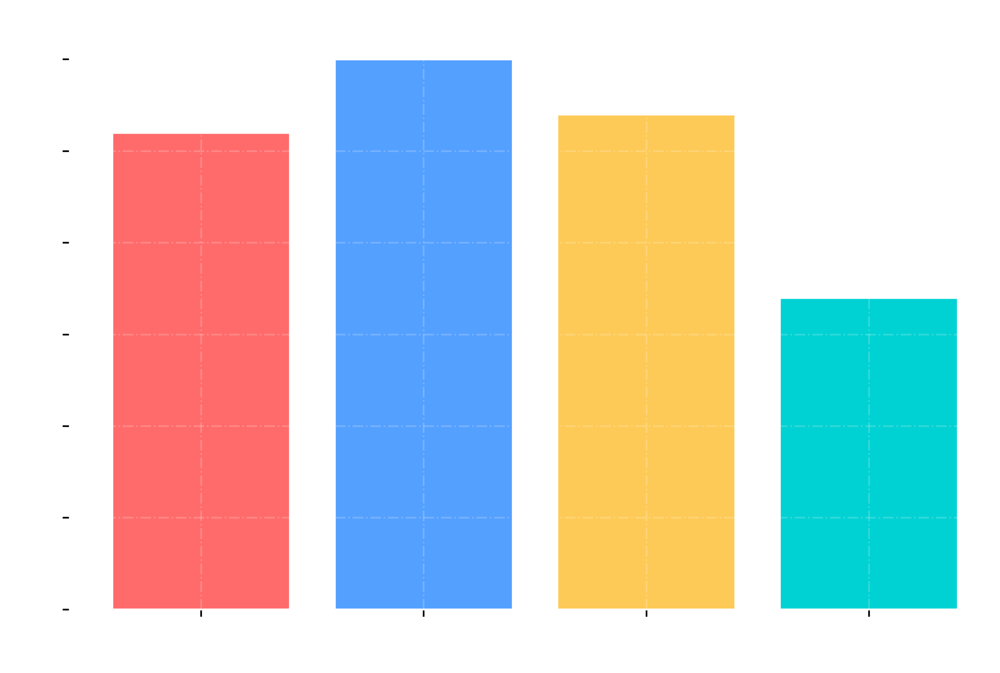
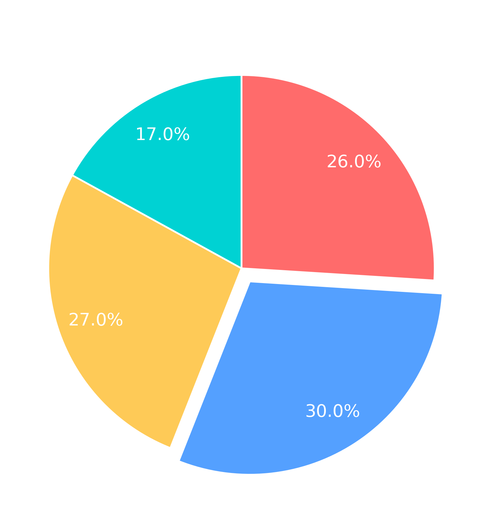
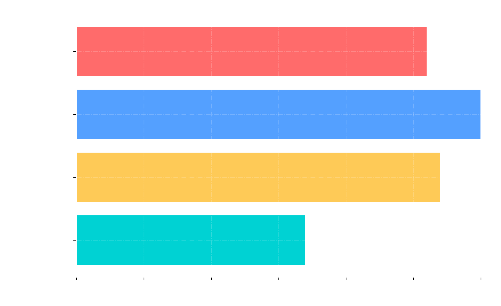
.png)
Ejemplo 2: Variable Cuantitativa Discreta (no agrupada)
Contexto: Número de dispositivos electrónicos por hogar en 100 familias.
Datos Brutos (n=100)
Tabla de Frecuencias (No Agrupados)
| No. Dispositivos | Frecuencia Absoluta (fa) | Frecuencia Relativa (fr %) | Frecuencia Acumulada (F) |
|---|---|---|---|
| 0 | 12 | 12.0% | 12 |
| 1 | 9 | 9.0% | 21 |
| 2 | 19 | 19.0% | 40 |
| 3 | 15 | 15.0% | 55 |
| 4 | 16 | 16.0% | 71 |
| 5 | 13 | 13.0% | 84 |
| 6 | 16 | 16.0% | 100 |
| Total | 100 | 100% | - |
Interpretación:
El análisis muestra que el 19% de las familias posee 2 dispositivos, siendo la frecuencia más alta. Además, el 60% de los hogares tiene entre 3 y 6 dispositivos, indicando una alta tendencia tecnológica.
Gráficas: Distribución del número de dispositivos
.png)
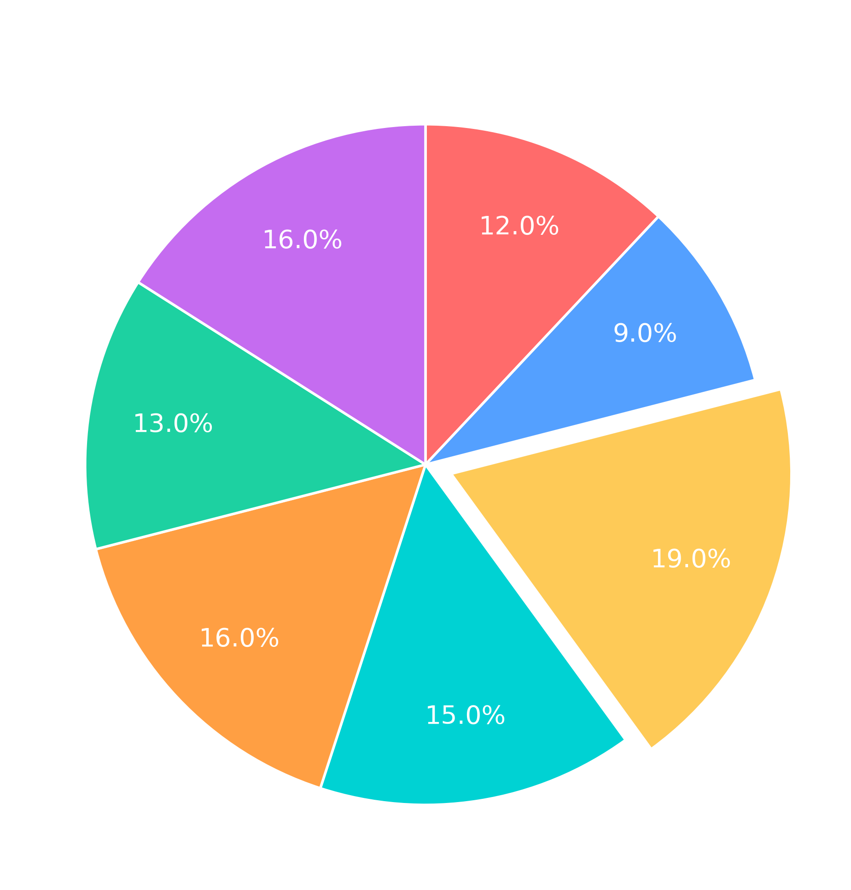
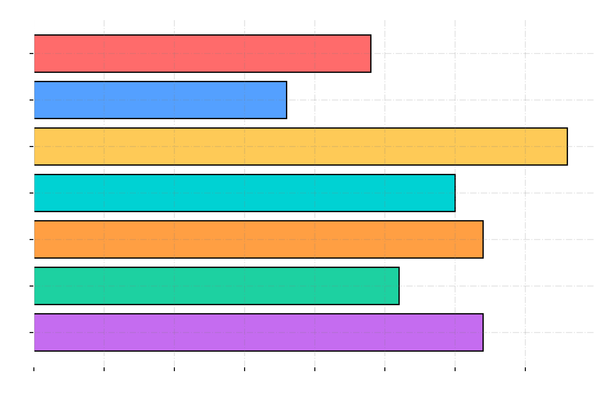
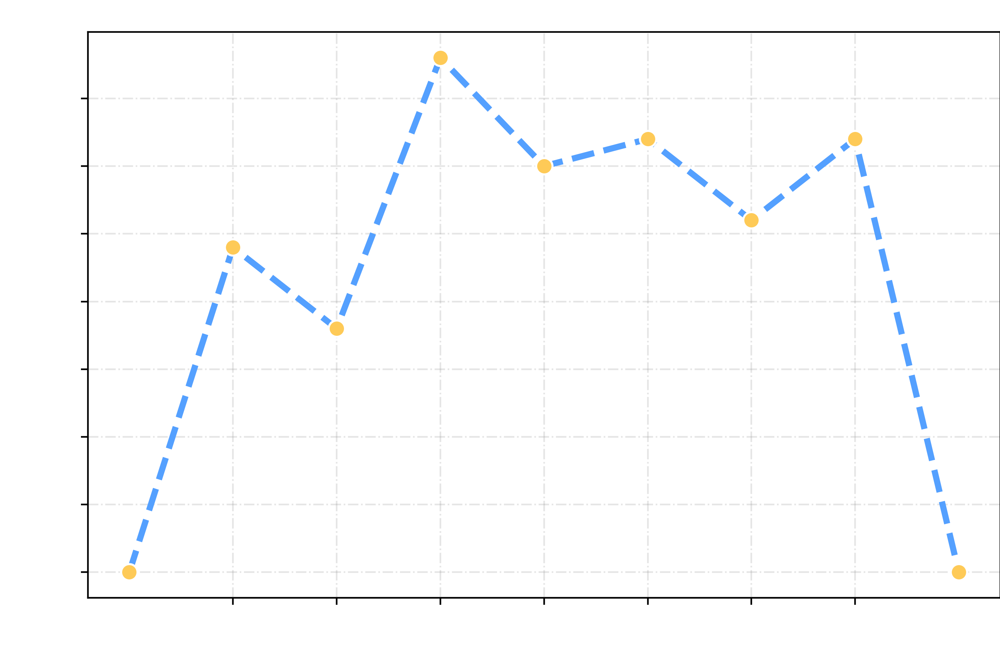
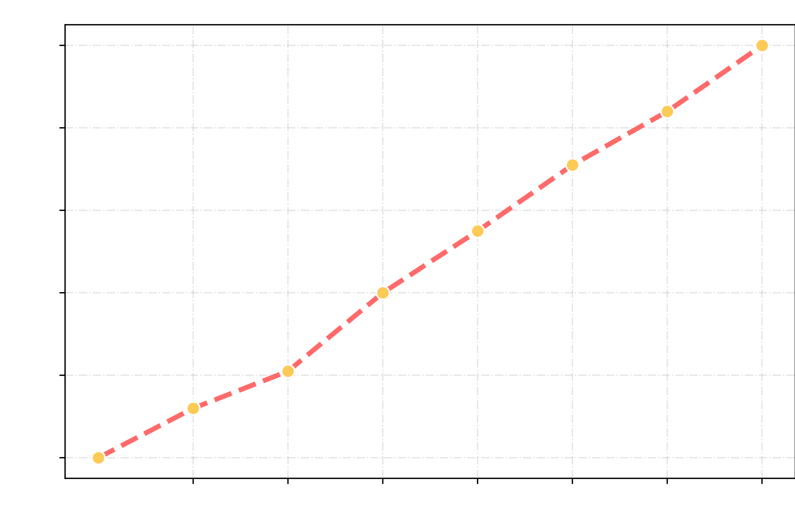
Ejemplo 3: Variable Cuantitativa Continua (agrupada)
Contexto: Consumo de agua diario (en litros) de 100 atletas (Datos generados entre 1.5L y 4.5L).
Datos Brutos (n=100)
Cálculos Previos (Algoritmo)
2. Rango (R): Dato Mayor - Dato Menor = 4.5 - 1.5 = 3.0
3. No. Clases (K): 1 + 3.322 * log(100) = 7.64 ≈ 8 Clases
4. Ancho de Clase (A): R / K = 3.0 / 8 = 0.375
Tabla de Frecuencias Agrupada
| Clase | Intervalo (L) | Marca de Clase (xi) | Frecuencia Absoluta (fa) | Frecuencia Relativa (fr %) | Frecuencia Acumulada (F) |
|---|---|---|---|---|---|
| 1 | [1.500 - 1.875) | 1.688 | 12 | 12.0% | 12 |
| 2 | [1.875 - 2.250) | 2.063 | 13 | 13.0% | 25 |
| 3 | [2.250 - 2.625) | 2.438 | 15 | 15.0% | 40 |
| 4 | [2.625 - 3.000) | 2.813 | 14 | 14.0% | 54 |
| 5 | [3.000 - 3.375) | 3.188 | 11 | 11.0% | 65 |
| 6 | [3.375 - 3.750) | 3.563 | 12 | 12.0% | 77 |
| 7 | [3.750 - 4.125) | 3.938 | 13 | 13.0% | 90 |
| 8 | [4.125 - 4.500] | 4.313 | 10 | 10.0% | 100 |
| Total | 100 | 100% | - | ||
Interpretación:
El análisis del consumo de agua muestra una distribución bastante uniforme. El intervalo con mayor frecuencia es de 2.250 a 2.625 litros, donde se ubica el 15% de los atletas. Además, se observa que el 54% de los deportistas consume menos de 3 litros diarios, mientras que un significativo 23% mantiene una hidratación alta, superando los 3.75 litros por día.
Gráficas: Distribución del número de consumo de agua diario
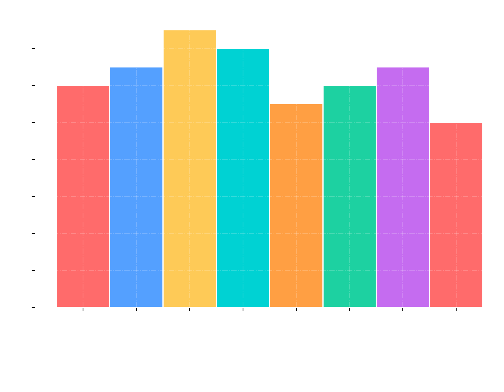
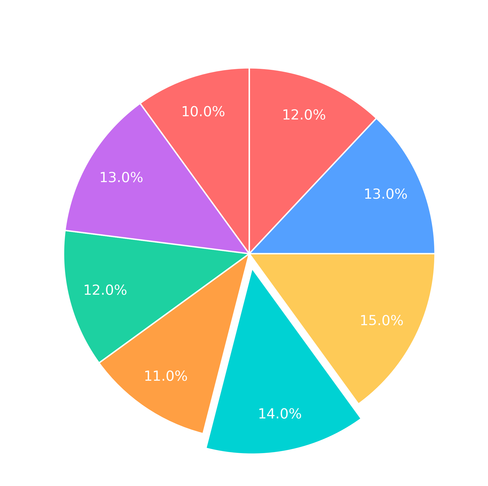

